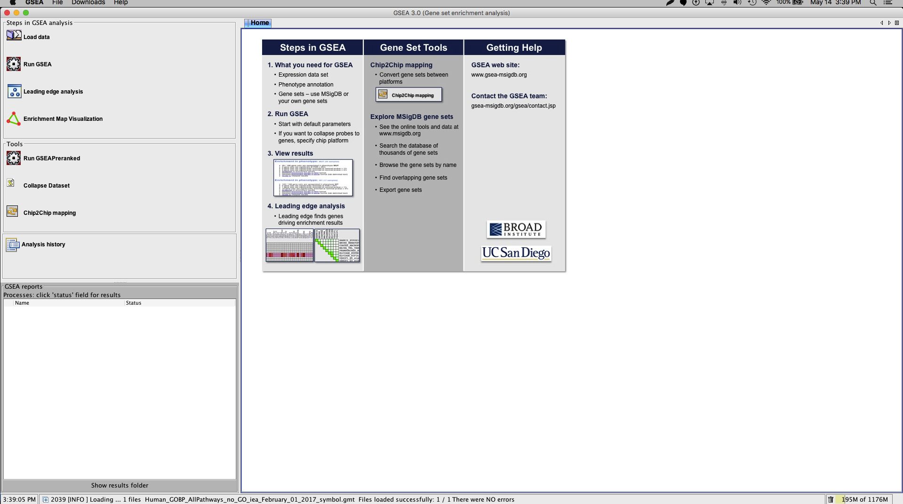
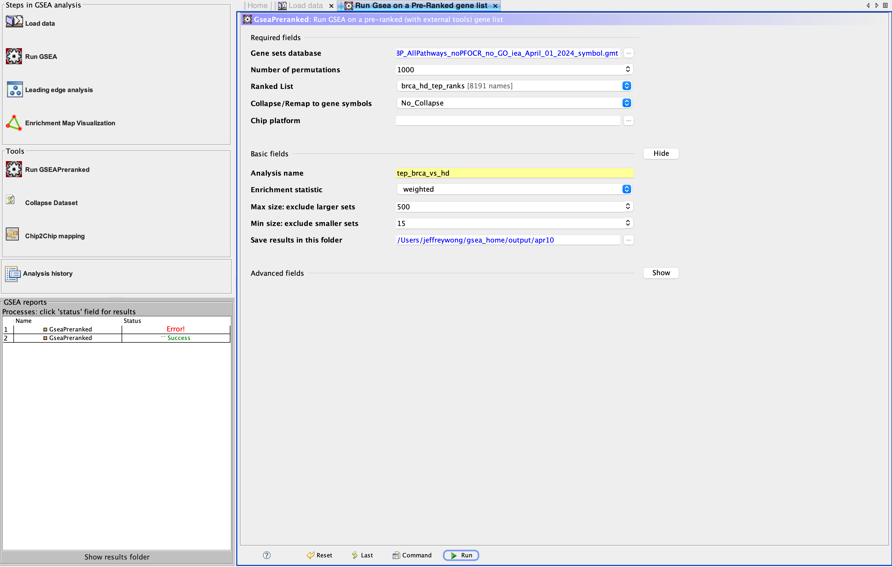

Identify Pathways
- Table of Contents
I. Goals
Previously, we introduced a study by Best et al. (Best 2015) that examined the feasibility of using platelet transcriptomes to distinguish individuals diagnosed with breast cancer (BrCa) from healthy donors (HD). The workflow step took in RNA-Seq counts and metadata describing the samples (i.e. HD or BrCa) and analyzed the data for gene-wise differential expression (DE). One of the outputs from that step is a list of each RNA species and a respective rank, calculated from the DE test. In brief, the magnitude of rank is proportional to the ‘rareness’ of a difference in RNA counts at least as large as that observed, assuming no association between sample class assignment and RNA count.
Note: For the sake of simplicity, we will use the terms ‘pathway’ and ‘gene set’ interchangeably. Typically, a ‘pathway’ refers to gene set components that enact a change or product (e.g. signal transduction, metabolism).
In this section we discuss the use of Gene Set Enrichment Analysis (GSEA) to sift out pathways from the underlying alterations in gene expression (Figure 1). The pathways that emerge from this analysis will be passed on to the next workflow step where we attempt to simplify their interpretation using the Enrichment Map visualization tool.
By then end of this discussion you should:
- Be able to install and set up the GSEA desktop software
- Be able to use GSEA to identify enriched gene sets using as inputs a rank file and a gene set database. The gene set database is pre-prepared.
- Obtain a pair of reports describing gene sets enrichment in BrCa and HD that are dependencies for subsequent workflow steps

II. Background
A detailed description of GSEA is beyond the scope of this discussion. Recall that, in addition to a rank file, GSEA requires a set of candidate gene sets in the form of a gene set database file (Figure 1). Below we describe a typical gene set database and provide an extremely brief overview for how GSEA operates.
Is there a difference between ‘gene sets’ and ‘pathways’?
GSEA searches through candidate gene sets to identify those that are enriched within our ranked gene list. A gene set is a list of genes that share some attribute. For example, a gene set could consist of loci assigned to a particular chromosomal band. Alternatively, pathways - those genes whose coordinated activity lead to change or produce a product - can also be represented as a gene set. For example, a gene set for a pathway could be represented by genes involved in DNA damage cell cycle checkpoint.
Concretely, let us consider the ‘IL-5 Signaling Pathway’ curated by as part of the NetPath database (Figure 2).
The pathway depicted in Figure 2 has a corresponding entry in NetPath that contains a listing of the genes and a brief description (Figure 3).
What is a ‘gene set database’?
The group of candidate gene sets under consideration for a given GSEA run can be individually selected to reflect the interest and focus of the study at hand. More often, GSEA is used in an exploratory fashion and so candidate gene sets curated by others are often employed, which typically cover a wide swath.
To make life easier, GSEA has standardized the acceptable formats for defining gene set candidates and these are collectively known as gene set databases. These are simple tab-delimited files with the extensions that include .gmx, gmt and .grp. Concretely, let us consider a sample gene set database file developed by Gary Bader’s laboratory that defines human gene sets gathered from several sources including MSigDB; Gene Ontology; Reactome; Panther; NetPath; NCI; and HumanCyc. This database file defines a table, one gene set per row: The first column holds the gene set name, the second is a description and the subsequent fields are the names of genes in the set. Figure 4 shows an exceprt of the database, which has an entry for the NetPath IL-5 pathway.
Finding enriched gene sets
Once we have gathered our candidate gene set database and the ranked gene list, we are ready to proceed. The details of GSEA are rather technical; Instead, we provide an overview of the algorithm (Box 1).
- Select one candidate gene set from the database
-
Calculate an enrichment score (ES) for selected candidate gene set
An ES effectively tells us how many of the candidate set's genes are 'bunched up' at the top (positive rank value) or the bottom (negative rank value) of the ranked gene list. More 'bunching' at the top means that the candidate's genes are more likely to be truly upregulated and vice versa.
- Calculate an ES for many (1 000) gene sets composed of randomly chosen genes of the same size as the selected gene set
-
Calculate a p-value
This is the fraction of the random gene set ESs that exceed the candidate ES. A smaller p-value corresponds to a increasingly rare observation.
- Repeat for each remaining candidate gene set
-
Correct for multiple testing
The chance that a gene set will be significant increases with the number of gene sets tested. Thus, corrections must be made to take this into account.
III. Workflow Step
Let us review what we have learned in our lead up to this step: GSEA can be used to identify altered pathways from underlying changes in gene expression; The two inputs to GSEA are a rank gene list generated from our differential expression analysis along with a gene set database composed of candidate gene sets that GSEA will filter.
In this workflow step, we will use GSEA to generate two files that report enriched gene sets in each of the two conditions tested. An enrichment report is a table that lists the statistics describing the extent of enrichment (Table 1).
Table 1. Sample enrichment report
| NAME | … | SIZE | ES | NES | NOM p-val | FDR q-val | … |
|---|---|---|---|---|---|---|---|
| EUKARYOTIC TRANSLATION ELONGATION | … | 82 | -0.9144994 | -3.0786333 | 0 | 0 | 0 |
| … | … | … | … | … | … | … | … |
Previously, we compared RNA counts in BrCa relative to HD. Accordingly, GSEA will provide one report for each class, or in GSEA terminology, each ‘phenotype’:
- Report for BrCa enrichment - Pathways that are enriched in BrCa relative to HD
- Report for HD enrichment - Pathways that are enriched in HD relative to BrCa
These reports are the dependencies for the next workflow step where we use software to view and interact with these enriched pathways in a manner that is far more interpretable than a list of output.
Software requirements
We are opting to use the desktop version of GSEA. There are some hoops to jump through in order to get it:
- Install Java version 8
- Register to use the GSEA software
- Login
- Download
Launch the GSEA application. You will see the GSEA logo splash then the application itself (Figure 5).

Steps in GSEA analysis) provides quick access to the most common actions. The main window displays the Home tab by default. Each control panel action typically opens a new tab in the main window.
Input
Ranked gene list
This is the output from the previous step.
Gene set database
This is the human gene set database culled from various sources, generated by the Bader lab (Human_GOBP_AllPathways_no_GO_iea_February_01_2017_symbol.gmt).
Let us assume you have installed the GSEA software and placed the input files in an input directory. Then you should now have a directory structure similar to the following.
...
|--- input
| |
| |--- brca_hd_tep_ranks.rnk
| |--- Human_GOBP_AllPathways_no_GO_iea_February_01_2017_symbol.gmt
...
Analysis
Here we will step through four tasks that we will need to perform within the GSEA software that will generate our enrichment reports.
1. Load data files
In this part we get our inputs into GSEA. In the Steps in GSEA analysis panel (Figure 5, left) click the Load data button which will bring up a panel in the main window (Figure 6).
Browse for files...thenChoosethe ranked gene listBrowse for files...thenChoosethe gene set database file
Load data button in the control panel Steps in GSEA analysis.
Wait a few seconds for the files to load into memory. You will receive a pop-up dialog if the file was successfully loaded. You will also see the files in the
Object cachepanel of theLoad datatab.
2. Settings
We now tell GSEA what these files actually represent and tailor the GSEA run accordingly. Bring up the GSEA pre-ranked tab by selecting GseaPreranked from the Tools panel and fill in the details for the Required and Basic fields (Figure 7).
Required fieldsGene sets database: Click the ellipsis and wait a few moments for a dialog to pop up. Navigate toGene matrix (local gmx/gmt)(click arrow along top). Select the gene set database that you obtained above (.gmtfile)Collapse dataset to gene symbols: False- This option is a vestige of microarray technology where an additional step was necessary to match array probes/spots to a single gene identifier.
Basic fieldsAnalysis name: Choose a name for this particular run of GSEASave results in this folder: Choose one

Tools in the menu dropdown, then GseaPreranked to bring up the Run GSEA on a Pre-Ranked gene list tab.
3. Run GSEA
Click Run in the Run Gsea on a Pre-Ranked gene list tab. The GSEA reports panel (Figure 5, bottom left) will show the Name of this run and the Status as Running while in progress.
-
Typical run times
- Mac: MacBook Air (Early 2015), 2.2 GHz Intel Core i7, 8 GB 1600 MHz DDR3, OS X El Capitan (10.11.6) ~ 10 minutes
4. Post-GSEA
Take a look at the directory you set for Save results in this folder. The default location is gsea_home in your user space. You should see something like the following:
...
|--- input
| |
| |--- brca_hd_tep_ranks.rnk
| |--- Human_GOBP_AllPathways_no_GO_iea_February_01_2017_symbol.gmt
|
|--- gsea_home
|
|--- output
|
|--- monthDay
|
|--- tep_brca_vs_hd.GseaPreranked.XXXXXXXXXXXXX
|
|--- index.html
|--- pos_snapshot.html
|--- neg_snapshot.html
|--- gsea_report_for_na_pos_XXXXXXXXXXXXX.xls
|--- gsea_report_for_na_neg_XXXXXXXXXXXXX.xls
|--- my_analysis.GseaPreranked.XXXXXXXXXXXXX.rpt
...
...
GSEA report
When the GSEA software has completed its analysis, the Status inside the GSEA reports panel will update to Success ... (Figure 5, bottom left). You may click this link to view the HTML report inside a browser (Figure 8). Alternatively, open the index.html file located in the GSEA results directory in a browser.
na_pos phenotype corresponds to the BrCa class and na_neg refers to the HD class.
You can read the complete guide to Interpreting GSEA Results that includes a description of the GSEA report.
Below we will briefly highlight a few aspects to take special note of.
Enrichment in phenotype
There are two sections by this name which refers to those gene sets with positive and negative enrichment scores, respectively (Figure 8). Recall that we assessed gene expression in the BrCa class relative to the HD class. Consequently, in our case, the na_pos phenotype corresponds to the BrCa class and na_neg refers to the HD class. We briefly discuss the meaning of two of the entries in this section below.
-
Snapshot of the enrichment results. Recall from Box 1, Step 2 that during GSEA, an enrichment score (ES) is calculated for each candidate gene set. The snapshots display the raw data that GSEA uses in its calculations: The ES is the peak vertical axis value of this plot. Roughly speaking, the magnitude of the ES is indicative of the chances that it will be deemed significant. If you look inside your GSEA home folder you will see
pos_snapshot.htmlandneg_snapshot.html. For thena_poscase, click on the link forSnapshot of enrichment resultsto bring up a panel of enrichment score plots; There should be an entry for our old friend the IL-5 signal transduction pathway, which you can click to bring up the full report showing the summary, genes and the enrichment plot (Figure 9).Figure 9. Enrichment plot for NetPath IL-5 signalling pathway. Shown is a the running sum plot for the IL-5 signal transduction pathway described earlier. -
Detailed enrichment results. These are the end-goal for our workflow step! These files provide a summary report of gene sets enriched in this phenotype. You can find these files inside your GSEA results folder named
gsea_report_for_na_pos_XXXXXXXXXXXXX.xlsandgsea_report_for_na_neg_XXXXXXXXXXXXX.xls. The rows of the report include information for each enriched gene set (Table 2).Table 2. Exceprt of enrichment report for BrCa class
NAME SIZE ES NES NOM p-val FDR q-val FWER p-val PID_FAK_PATHWAY 48 0.8144367 2.2033582 0.0 0.0 0.0 THROMBOXANE A2 RECEPTOR SIGNALING 39 0.84532094 2.175933 0.0 0.0 0.0 SIGNALING EVENTS MEDIATED BY FOCAL ADHESION KINASE 48 0.8144367 2.16101 0.0 0.0 0.0 … … … … … … … IL5%NETPATH%IL5 IL5 49 0.7718686 2.0658088 0.0 0.0 0.0 … … … … … … …
Output
Listed below are the outputs of this step that will be required as input dependencies for the next steps of the workflow.
Enrichment Map dependencies
We have renamed the enrichment report files and provide them below.
-
Enrichment report for BrCa BrCa report (.xls)
-
Enrichment report for HD HD report (.xls)